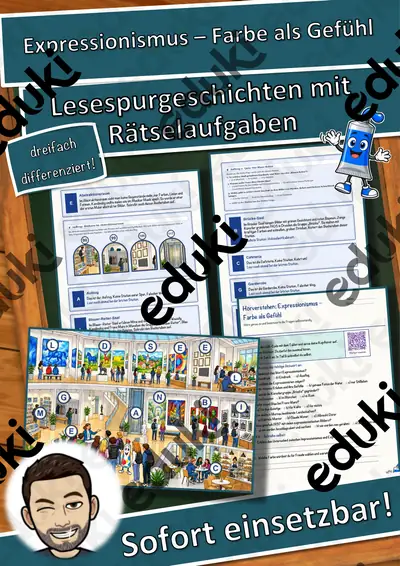
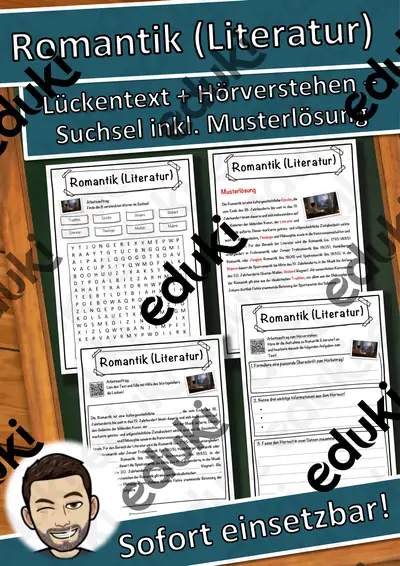

Literatur: Kurzgeschichte, Roman und Jugendbuch: Arbeitsblätter für Klasse 7–10 (Deutsch)
Literatur im Deutschunterricht der Sekundarstufe umfasst Kurzgeschichte, Roman und Epochen. Die Lernenden analysieren Figuren, Aufbau und Sprache und ordnen Texte in ihre Zeit ein.
Gearbeitet wird in der Regel an Kurzgeschichte, Roman und Epochen, ergänzt um Romantik, Aufklärung und Figurencharakteristik.
Je nach Bundesland variiert die genaue Einordnung; üblich ist das Fach Deutsch in der Sekundarstufe I (Klasse 7–10). Die Jugendlichen analysieren literarische Texte und ordnen sie einer Epoche zu.
Im Alltag einer Lehrkraft zählt, dass Material sofort einsatzbereit ist: Die Blätter zu Literatur: Kurzgeschichte, Roman und Jugendbuch greifen Roman, Epochen und Romantik auf, lassen sich ausdrucken und kommen mit Lösungen, damit die Vorbereitung kurz bleibt. Leistungsstarke und schwächere Lesende erhalten über die Lesespurgeschichten Texte in drei Stufen.
Die Auswahl zum Thema umfasst derzeit 10 Titel, zum Beispiel Merkmale einer Kurzgeschichte, Die Romantik und Expressionismus. Dazu zählen 3 Lesespurgeschichten, 1 Prüfungstraining und 6 Lückentexte mit Hörverstehen für Klasse 6–10. Ein Epochen-Steckbrief nach festem Raster hilft, Merkmale zu vergleichen.
Das gehört zum Thema
Passende Arbeitsblätter und Materialpakete

Merkmale einer Kurzgeschichte – Lesespurgeschichte mit Rätselaufgaben (Klasse 7)

Die Romantik – Musik der Gefühle – Lesespurgeschichte mit Rätselaufgaben (Klasse 9)

Expressionismus – Farbe als Gefühl – Lesespurgeschichte mit Rätselaufgaben (Klasse 10)

Die Kurzgeschichte – Prüfungstraining Deutsch (Klasse 9)

Weimarer Klassik (Literatur) Lückentext mit Wortspeicher Hörverstehen und Suchsel

Sturm und Drang (Literatur) Lückentext mit Wortspeicher Hörverstehen und Suchsel

Romantik (Literatur) Lückentext mit Wortspeicher Hörverstehen und Suchsel

Romantik Lückentext mit Wortspeicher Hörverstehen und Suchsel

Kinderbuch Lückentext mit Wortspeicher Hörverstehen und Suchsel

Aufklärung Lückentext mit Wortspeicher Hörverstehen und Suchsel
Häufige Fragen
Für welche Klassenstufe passen die Arbeitsblätter zu Literatur: Kurzgeschichte, Roman und Jugendbuch?
Passend sind Klasse 6–10. Von den 10 Titeln wenden sich die meisten an Klasse 9, einige lassen sich differenzierend auch in benachbarten Stufen nutzen.
Welche Inhalte decken die Materialien zu Literatur: Kurzgeschichte, Roman und Jugendbuch ab?
Die Materialien arbeiten an Kurzgeschichte, Roman und Epochen und gehen dann weiter zu Romantik, Aufklärung und Figurencharakteristik. Vorab lohnt ein Blick in den Lehrplan des eigenen Bundeslandes.
Wie setze ich Literatur: Kurzgeschichte, Roman und Jugendbuch im Unterricht ein?
Ein Epochen-Steckbrief nach festem Raster hilft, Merkmale zu vergleichen. Danach genügt meist ein Material als Einstieg und eines zum Üben.
Mehr Material nach Fach und Klasse
Verwandte Lehrplanthemen
- Inhaltsangabe und Textarten (Deutsch, Klasse 6–10)
- Bewerbung und Praktikum (Deutsch, Klasse 8–10)
- Gedichte und Balladen (Deutsch, Klasse 3–10)
- Kunstepochen und Stile (Kunst, Klasse 5–10)
- Lesen und Leseverstehen (Deutsch, Klasse 1–6)